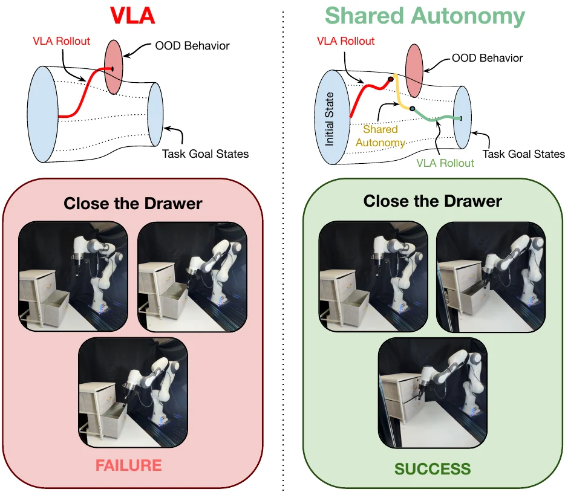

Supplementary Material · Anonymous Submission
SAPS: Shared Autonomy for Policy Steering by Blending Teleoperation with a Pretrained VLA
This page reproduces the supplementary appendix in full: evaluation-environment details, per-task specifications, additional quantitative metrics, and qualitative rollouts across LIBERO, LIBERO-PRO, CALVIN, and real-world hardware.

Contents
- A1Evaluation Environment
- A2Discussion on Baseline Task Completion
- A3Additional Details on Human-in-the-Loop
- A4Distance-Based Perturbation Task Setup for LIBERO
- A5Perturbation Task Setup for LIBERO-PRO
- A6Additional Metrics for LIBERO-PRO
- A7Additional Details and Metrics for CALVIN
- A8Additional Metrics for Real World
- A9Frequently Asked Questions
- —References
Appendix A1
Evaluation Environment
Simulation experiments are conducted using the LIBERO benchmark in Robosuite and CALVIN with a Franka Panda manipulator controlled through an operational-space pose controller. Observations include RGB images from a third-person agent-view camera and an eye-in-hand wrist camera, together with end-effector pose and gripper state. Actions are represented as 7-DOF commands consisting of 3D translation, 3D orientation, and gripper actuation. The environment operates at 20 Hz. Human teleoperation was provided through either keyboard or gamepad input, depending on the arbitration method and evaluation setting. Cosine used a gamepad controller for all simulation and hardware evaluations, as the continuous joystick input provided smoother directional commands for agreement-based arbitration. In simulation, Blending and Takeover were evaluated with keyboard input, where operator commands were used as corrective interventions. For the real-world hardware experiments, the Blending interface was transferred to the gamepad to provide smoother control during physical robot execution.
The LIBERO, LIBERO-PRO and real-world evaluations used the π0.5 model checkpoints released by Black et al. [1], trained on either the LIBERO or DROID dataset. CALVIN used a π0.5 model checkpoint released by RLinf [2] finetuned on CALVIN ABC. CALVIN also uses a DP model checkpoint released in DynaGuide [3].
Appendix A2
Discussion on Baseline Task Completion
In this work, π0.5 and Teleoperation were used as baselines to evaluate shared-autonomy methods for policy steering. The low task success of π0.5 under perturbations suggests that the policy was sensitive to changes in the initial scene configuration. In simulation, this was likely caused by overfitting to the training distribution, where the policy may rely on memorized object positions or narrow visual cues rather than a generalizable task strategy. Therefore, large positional perturbations can move the scene outside the training distribution, causing incorrect actions, poor recovery, or wrong task completion.
Similar issues can occur in hardware, where object appearance, scale, lighting, camera viewpoint, and contact dynamics may differ from the data used to train the policy. These real-world variations can cause π0.5 to misinterpret the scene or produce actions that are only valid for familiar object placements and appearances. This highlights a key limitation of using the pretrained VLA policy alone: strong nominal behavior does not necessarily imply robustness to perturbations or real-world variation.
Teleoperation exhibited a different limitation. In simulation, teleoperation was difficult because the operator had limited depth perception from camera observations, making it harder to judge object distance, gripper alignment, and contact timing. In real-world evaluations, the operator had direct depth perception of the workspace, which made task execution faster. These baseline limitations motivate shared autonomy, where the policy handles nominal behavior while limited human corrections help recover from out-of-distribution states or difficult portions of the task.
Appendix A3
Additional Details on Human-in-the-Loop
Two operators performed the teleoperation evaluations, including one operator with no prior experience in teleoperating robots. Neither operator required training before using the gamepad or keyboard interface, suggesting that the human-in-the-loop setup can be used with little to no prior experience in robot control. In practice, both gamepad and keyboard interfaces were intuitive enough for operators to provide corrective input during task execution.
Across each benchmark, the same operator was used for all human-in-the-loop methods in that benchmark, including Teleoperation and all SAPS variants, so comparisons within a benchmark are not confounded by changing operators across methods. Results are therefore not averaged across multiple operators; each benchmark reports repeated trials from the corresponding single operator. LIBERO, LIBERO-PRO, and real-world evaluations used the same operator without prior robot control experience, while CALVIN used an operator with prior robot arm control experience. We chose this protocol to keep human-input behavior consistent across methods within each benchmark, but broader multi-operator evaluation remains an important direction for future work.
For safety and consistency in all trials, the maximum teleoperation speed was limited to approximately 0.2 m/s. This speed limit helped prevent abrupt robot motions while still allowing the operator to make meaningful corrections during shared-autonomy rollouts.
Appendix A4
Distance-Based Perturbation Task Setup for LIBERO
We perturb the distance of the cream cheese object from the original location in the LIBERO-10 task, which we illustrate in Figure A1. We find that while the base policy decreases in performance, our shared autonomy method can retain performance across different distances for task perturbations. The exact changes in position are listed in Table A1.
Figure A1 visualizes the controlled LIBERO object-displacement evaluation used in our distance-based perturbation study. Starting from the original cream-cheese placement, we shift the target object to multiple new positions while keeping the same task instruction and scene setup. These perturbations are designed to isolate spatial generalization failures by changing object position without changing the manipulation objective.

Table A1 reports the exact displacement values used for each perturbation. The perturbations span both axis-aligned and diagonal shifts, allowing us to evaluate whether policy performance degrades smoothly as the object moves farther from the original training-distribution location. Together, Figure A1 and Table A1 define the controlled spatial OOD setting used for the LIBERO results in the main paper.
Table A1Distance (m) perturbations of LIBERO evaluations of target object: cream cheese.
| Quantity | 1 | 2 | 3 | 4 | 5 | 6 | 7 | 8 | 9 |
|---|---|---|---|---|---|---|---|---|---|
| |Distance| | 0.08 | 0.13 | 0.18 | 0.18 | 0.20 | 0.20 | 0.23 | 0.26 | 0.29 |
| |dX| | 0.00 | 0.10 | 0.00 | 0.18 | 0.13 | 0.05 | 0.06 | 0.20 | 0.08 |
| |dY| | 0.08 | 0.08 | 0.18 | 0.05 | 0.15 | 0.23 | 0.23 | 0.16 | 0.28 |

Appendix A5
Perturbation Task Setup for LIBERO-PRO
Table A2 summarizes the 10 LIBERO-PRO [5] perturbation tasks used in our evaluation. The selected tasks include task perturbations, which change the language-conditioned goal or target object, and swap perturbations, which alter the spatial arrangement of relevant objects in the scene. These settings test whether the policy can maintain correct task grounding when object identity, target placement, or task specification become OOD.
We select these tasks to cover a range of manipulation behaviors, including pick-and-place, mug rearrangement, articulated-object interaction, and object substitution. This task set therefore evaluates whether shared autonomy can recover failures that arise not only from spatial displacement, but also from incorrect object binding and task-level confusion.
Table A2LIBERO task specifications used for the original and perturbed task variants.
| Task Name | Task Specification | Original Task | Perturbed Task |
|---|---|---|---|
| task_soup_butter | libero_10_task_6 | Place the cream cheese and butter on plate | Replace the cream cheese with soup |
| swap_soup_cheese | libero_10_swap_4 | Place the soup and cream cheese on plate | Swap the target locations of the soup and cream cheese |
| swap_cheese_butter | libero_10_task_6 | Place the cream cheese and butter on plate | Replace the cream cheese with soup |
| task_mugs | libero_10_task_7 | Place the white mug on the left plate and the yellow mug on the right plate | Put the white mug on the right plate and the yellow mug on the left plate |
| swap_mugs | libero_10_swap_7 | Place the white mug on the left plate and the yellow mug on the right plate | Swap the position of the yellow mug |
| task_choc | libero_object_task_7 | Place the orange juice in the basket | Replace the orange juice with chocolate |
| swap_juice | libero_object_swap_7 | Place the orange juice in the basket | Swap the orange juice target placement |
| task_bowl | libero_spatial_task_6 | Place the bowl on the box on the plate | Place the bowl on the cabinet on the plate |
| swap_bowl | libero_spatial_swap_6 | Place the bowl on the box on the plate | Swap the bowl target placement |
| task_drwr_cheese | libero_goal_task_1 | Open the drawer and place the bowl in the drawer | Open the drawer and place the cream cheese in the drawer |

Appendix A6
Additional Metrics for LIBERO-PRO
Figure A6 shows the tradeoff between human intervention rate and completion time across LIBERO-PRO tasks. Pure Teleoperation requires 100% human intervention and often produces longer completion times, while π0.5 requires no human input but can still take longer due to incorrect or inefficient autonomous behavior. In contrast, the shared-autonomy methods occupy the upper-left region of the plot, indicating that they reduce completion time while requiring only partial human input. Blending and Takeover generally require the least intervention, while Cosine uses more corrective input but remains far below full teleoperation.
Figure A7 summarizes the same trend using method-level averages. All SAPS variants achieve substantially lower completion times than Teleoperation while requiring much less human control. These results further support that shared autonomy provides a practical balance between autonomous policy execution and human correction, improving task efficiency without reverting to continuous manual operation.
Table A3LIBERO-PRO task success rates (%) (n = 25). Cosine arbitration achieves the highest shared-autonomy mean success rate across the 10 out-of-distribution tasks. Across the 10 tasks, all shared-autonomy methods significantly improved success rate over π0.5 using a one-sided Wilcoxon signed-rank test: p = 9.77 × 10−4.
| Task | π0.5 | Blending | Cosine | Takeover | Teleoperation |
|---|---|---|---|---|---|
| task_soup_butter | 34 | 96 | 96 | 100 | 100 |
| swap_soup_cheese | 0 | 90 | 98 | 84 | 94 |
| swap_cheese_butter | 32 | 88 | 96 | 94 | 94 |
| task_mugs | 0 | 90 | 100 | 88 | 100 |
| swap_mugs | 10 | 88 | 94 | 92 | 100 |
| task_choco | 26 | 100 | 94 | 94 | 100 |
| swap_juice | 16 | 94 | 100 | 92 | 100 |
| task_bowl | 6 | 96 | 100 | 96 | 100 |
| swap_bowl | 4 | 92 | 98 | 100 | 100 |
| task_drwr_cheese | 22 | 92 | 98 | 92 | 100 |
| Mean | 15.0 | 92.6 | 97.4 | 93.2 | 98.8 |

Table A4Human intervention rate across LIBERO-PRO tasks for each shared-autonomy method. Values report mean ± standard error across evaluation episodes (n = 25). All shared-autonomy methods require substantially less human intervention than pure Teleoperation, which corresponds to 100% intervention for every task. Intervention rate is reported as the percentage of control timesteps with active human input. Cosine: cosine-similarity arbitration; Blending: fixed blending arbitration; Takeover: full human control during intervention. Teleoperation is omitted from the table because it requires human input throughout the rollout, corresponding to 100% intervention for all tasks.
| Task | Cosine | Blending | Takeover |
|---|---|---|---|
| task_soup_butter | 28.1 ± 8.8 | 6.0 ± 2.9 | 7.6 ± 2.7 |
| swap_soup_cheese | 19.7 ± 5.4 | 9.3 ± 1.9 | 10.7 ± 3.7 |
| swap_cheese_butter | 28.3 ± 8.5 | 4.8 ± 1.3 | 4.7 ± 2.0 |
| task_mugs | 32.1 ± 5.8 | 19.2 ± 4.1 | 19.0 ± 4.1 |
| swap_mugs | 28.8 ± 9.8 | 7.3 ± 3.0 | 10.7 ± 3.6 |
| task_choco | 26.6 ± 9.7 | 16.0 ± 3.4 | 15.7 ± 4.5 |
| swap_juice | 26.7 ± 12.7 | 10.5 ± 3.0 | 15.7 ± 3.6 |
| task_bowl | 35.4 ± 9.8 | 17.1 ± 7.1 | 16.4 ± 10.1 |
| swap_bowl | 44.7 ± 12.6 | 14.1 ± 4.8 | 11.5 ± 5.5 |
| task_drwr_cheese | 29.7 ± 11.4 | 4.1 ± 1.6 | 5.3 ± 4.6 |
| Mean | 30.0 | 10.8 | 11.7 |


Appendix A7
Additional Details and Metrics for CALVIN
The unguided DP base policy executes autonomously with no human input. ITPS [4] performs shared autonomy by injecting a human-specified position-target gradient into the policy's diffusion sampling at every denoising step. DynaGuide [3] steers the policy autonomously, using a separately trained dynamics model and a classifier to bias diffusion sampling toward desired future states. Our method requires neither a modification to the diffusion sampler nor an auxiliary model: at each timestep it forms the executed action as a convex combination of the human's commanded action and the policy's action, with the blending weight set by the cosine similarity between the two, deferring to the policy when human and policy agree, and to the human when they diverge.
Despite this simplicity, cosine-similarity shared autonomy outperforms both more complex methods on every one of the 11 CALVIN subtasks. The figure below reports per-task success rate. Cosine arbitration succeeds on 100% of episodes for all eight articulated subtasks and 70–90% for the three block-lift subtasks, averaging 93% across the suite. The two prior methods trail substantially, DynaGuide at 80% and ITPS at 66%, and the autonomous base policy reaches only 45%. The gap is widest on the block-lift subtasks, where the base policy and ITPS both fall below 50% while Cosine arbitration still completes a clear majority of episodes. Notably, ITPS and our method involve human intervention at comparable rates (roughly 75–85% of timesteps), so the advantage of Cosine arbitration over ITPS isolates the arbitration mechanism itself rather than the mere presence of a human operator.

Figure A8 reports the end-effector path length per episode. Cosine arbitration produces the most direct motions on nearly every subtask, while the autonomous base policy travels 2–3× farther for the same subtask, showing undirected exploratory motion that the human's coarse directional input efficiently suppresses under Cosine arbitration.
Figure A9 reports the mean time to complete each subtask, counting a failed episode as the full 400-step horizon so that the metric reflects an expected time-to-finish rather than rewarding methods for discarding their failures. Cosine arbitration and DynaGuide finish the articulated task fastest, typically well under 200 steps, whereas the base policy and ITPS are repeatedly dragged toward the 400-step cap by their failures.
Figure A10 shows a lower intervention rate for ITPS compared to Cosine; however, ITPS has a much lower success rate, higher completion time (Figure A9), and higher end-effector path length (Figure A8).
Figure A11 illustrates these differences qualitatively on button_off. From an identical initial
state, the base policy and ITPS fail to press the button and run out the full 400-step horizon, whereas DynaGuide and
Cosine arbitration reach and press the button in well under 100 steps. Figure A12 and Figure A13 show
examples of successes and failures for CALVIN subtasks.


button_off subtask
for CALVIN with DP. Each row is one method (DP, ITPS, DynaGuide, Cosine); the four columns are evenly-spaced frames
from rollout 5, viewed from a fixed camera. All four rollouts begin from the same initial state (t = 0).
Because each episode ends at success or at the 400-step timeout, the rollouts span very different durations, so
every frame is labeled with the environment timestep at which it is taken: DP and ITPS fail and run the full 400
steps without pressing the button, whereas DynaGuide and Cosine reach the button and complete the task in well under
200 steps.
Vector PDF ↓

Appendix A8
Additional Metrics for Real World
During each real-world hardware rollout, we track the human activation rate to evaluate whether the shared-autonomy behaviors observed in simulation transfer to physical robot execution. Human activation is defined as the percentage of control timesteps in which the operator provides input above the activity threshold. Pure Teleoperation requires human input throughout the entire rollout, corresponding to 100% intervention. In contrast, Cosine arbitration uses 63.9% intervention on Marker Plate, 54.6% on Close Drawer, and 68.7% on Open Cabinet, while Blending uses 53.9%, 48.5%, and 66.7% intervention on the same tasks. Both shared-autonomy methods significantly reduce human intervention relative to Teleoperation across all three hardware tasks using pairwise Mann–Whitney U tests, with p < 10−15 for all comparisons. These results show that SAPS transfers to real-world manipulation without reverting to continuous manual control. Instead, shared autonomy enables the operator to provide partial corrective input while π0.5 continues to contribute learned manipulation behavior during physical robot execution.
The success-rate table below reports real-world task success rates across the three hardware tasks. Table A5 reports the corresponding human intervention rates and shows that the operator provides partial corrections while π0.5 continues to contribute learned manipulation behavior.
Figure A14 reports completion time across the hardware tasks. Both Cosine and Blending reduce completion time relative to autonomous π0.5, indicating that shared autonomy helps avoid inefficient autonomous recovery behavior. Figure A15 qualitatively shows successful executions of the three real-world tasks.
TableHardware evaluation (n = 20 episodes/task) by task success rate.
| Task | π0.5 | Teleoperation | Blending | Cosine |
|---|---|---|---|---|
| Pick and Place | 50% | 100% | 100% | 100% |
| Close the Drawer | 25% | 100% | 80% | 100% |
| Open the Left Cabinet | 5% | 100% | 100% | 95% |
Table A5Hardware evaluation of mean human intervention (± std. err.) across shared-autonomy methods (n = 20), with pairwise p-values comparing human intervention rates for Cosine and Blending shared autonomy against Teleoperation. Across Marker Plate, Close Drawer, and Open Cabinet, both shared-autonomy methods significantly reduce intervention relative to Teleoperation (p < 10−15 for all comparisons).
| Task | Teleoperation | Blending | Cosine |
|---|---|---|---|
| Marker Plate | 100 ± 0 | 53.9 ± 19.7 | 63.9 ± 16.6 |
| Close Drawer | 100 ± 0 | 48.5 ± 12.7 | 54.6 ± 24.0 |
| Open Cabinet | 100 ± 0 | 66.7 ± 13.6 | 68.7 ± 14.5 |


Appendix A9
Frequently Asked Questions
Were other confidence-based methods tested for dynamically changing the α term?
We also ran preliminary tests basing uncertainty on token entropy [6], but found the π0.5 policy to be generally overfit and thus too confident while generating trajectories for the wrong task, not allowing the user to take over to push the end effector in the correct direction to fix the performance of the task. Furthermore, unlike π0-FAST, where action uncertainty can be estimated directly from the entropy of autoregressively predicted FAST action tokens, π0.5 uses a hybrid architecture in which the final low-level action chunk is generated by a continuous flow-matching action expert. Thus, token entropy is naturally available for textual or subtask predictions, and potentially for FAST-tokenized auxiliary outputs, but it is not a direct uncertainty measure for the deployed continuous action distribution.
References
Works Cited in This Appendix
- K. Black, N. Brown, J. Darpinian, et al. π0.5: A Vision-Language-Action Model with Open-World Generalization. Proceedings of the 9th Conference on Robot Learning, PMLR 305:17–40, 2025. Link
- C. Yu, Y. Wang, Z. Guo, et al. RLinf: Flexible and Efficient Large-scale Reinforcement Learning via Macro-to-Micro Flow Transformation. arXiv:2509.15965, 2025. Link
- M. Du and S. Song. DynaGuide: Steering Diffusion Policies with Active Dynamic Guidance. Proceedings of the 39th Conference on Neural Information Processing Systems (NeurIPS), 2025.
- Y. Wang, L. Wang, Y. Du, et al. Inference-Time Policy Steering through Human Interactions. IEEE International Conference on Robotics and Automation, 2025. Link
- X. Zhou, Y. Xu, G. Tie, et al. LIBERO-PRO: Towards Robust and Fair Evaluation of Vision-Language-Action Models Beyond Memorization. arXiv:2510.03827, 2025. Link
- U. B. Karli, Z. Shangguan, and T. Fitzgerald. INSIGHT: INference-time Sequence Introspection for Generating Help Triggers in Vision-Language-Action Models. arXiv:2510.01389, 2025. Link